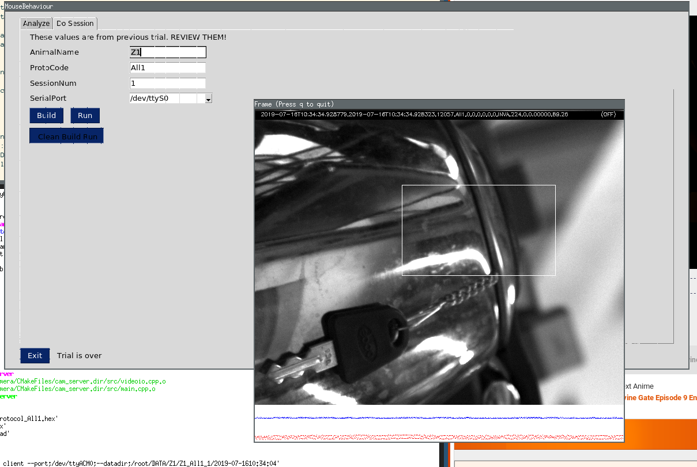

Docker is the recommended for running this pipeline. All dependencies, user permissions, and other setups are backed into this image. See the section Ubuntu 16-04 for running this pipeline without docker.
Docker
Installing Docker
- You should be in
sudogroup e.g., you should be able to install softwares. Try this,
If this is successful then you are good to go.$ sudo apt upadate -
You must be in
dockergroup. Typegroupsin terminal. Ifdockerappears in the output then you are already in docker group. -
Follow these instruction to install docker. Also see these instructions for adding proxy support to docker. To check that docker works fine, execute following in the terminal.
$ docker run hello-worldI saw the following output.
Unable to find image 'hello-world:latest' locally
latest: Pulling from library/hello-world
1b930d010525: Pull complete
Digest: sha256:6540fc08ee6e6b7b63468dc3317e3303aae178cb8a45ed3123180328bcc1d20f
Status: Downloaded newer image for hello-world:latest
Hello from Docker!
.
.The docker image is available at https://hub.docker.com/r/bhallalab/mousebehavioum. You can get it by executing the following:
$ docker pull bhallalab/mousebehaviourThis image is over 1.3GB! It is going to take a while to download.
Now we are ready to run the pipeline. But before we run this image, we must make sure that docker can access devices connected to host computer. We also need to collect data generated inside the docker during experiment and save it to the host machine.
Note
Type xhost + once in the terminal. This makes docker to access
graphics. You have to do it just once.
The camera and Arduino Uno board must be connected to host computer if you are using this image for running behaviour session. They are not required for analysis.
Important
For getting decent frames per second, camera needs to be connected to a
USB3.0 port. I was able to get 200 FPS.
How to find out USB-3.0 port
Ref: https://unix.stackexchange.com/a/112152/5362
- It has blue color.
- Use
lsusbcommand to check if you computer has it
On my system, I get the following output. You can see the a device by$ sudo lsusb -v | grep -iE "Bus|^Device Desc|bcdusb"Point Grey Research, Inc.connected to USB3.0 (bcdUSB 3.00).
Bus 002 Device 003: ID 1e10:4000 Point Grey Research, Inc.
Device Descriptor:
bcdUSB 3.00
(Bus Powered)
(Bus Powered)
Bus 002 Device 001: ID 1d6b:0003 Linux Foundation 3.0 root hub
Device Descriptor:
bcdUSB 3.00
Bus 001 Device 006: ID 1a86:7523 QinHeng Electronics HL-340 USB-Serial adapter
Device Descriptor:
bcdUSB 1.10
(Bus Powered)
(Bus Powered)
Bus 001 Device 002: ID 0bda:5686 Realtek Semiconductor Corp.
Device Descriptor:
bcdUSB 2.00
(Bus Powered)
bcdUSB 2.00
(Bus Powered)
Bus 001 Device 001: ID 1d6b:0002 Linux Foundation 2.0 root hub
Device Descriptor:
bcdUSB 2.00docker run --rm \
--net=host --privileged \
-v /dev:/dev \
-e DISPLAY=$(DISPLAY) \
-v /tmp/.X11-unix:/tmp/.X11-unix \
-v $(HOME)/.Xauthority:/root/.Xauthority \
-v $(HOME)/DATA:/root/DATA \
-it bhallalab/mousebehaviourAnd voila, you should see this gui. More information is here GUI. When in doubt, hover your mouse pointer on gui and a helpful message should pop-up (hopefully).

Ubuntu 16.04
If you can't use docker, you can build and run the pipeline in Ubuntu-16.04 based system. The camera firmware version which we have used is compatible with Ubuntu-16.04. The vendor also supports Ubuntu-18.04 but we have not ported our code to this Ubuntu-18.04 yet.
- Create an admin account, say
chuha(Hindi for mouse). Login. -
Add
chuhato following groups:dialoutTo access arduino.pgrimagingTo access PointGrey camera (Also seeudevrelated note). Following script should do the job.
$ sudo groupadd -f dialout $ sudo groupadd -f pgrimaging $ sudo usermod -a -G dialout,pgrimaging chuhaLogout and login again. Changes to group takes effect on a fresh login.
-
(udev) Add
udevrules. We need them for accessing camera events.$ mkdir -p /etc/udev/rules.d $ echo "SUBSYSTEM==\"usb\", GROUP=\"pgrimaging\"" >/etc/udev/rules.d/40-pgr.rules $ /etc/init.d/udev restart -
Install python3.6. The GUI and analysis scripts requires python3.6 or higher. It is not available in official repositories, so we need to use a ppa.
$ sudo add-apt-repository ppa:deadsnakes/ppa $ sudo apt-get update $ sudo apt-get install python3.6-tk python3.6-venv python3.6-dev -
Install required packages using
apt.$ sudo apt-get install -y cmake g++ git $ sudo apt-get install -y libboost-all-dev libopencv-dev libserial-dev arduino-core -
Create
python3.6virtualenv and enable it.
To make sure that python3.6 becomes default python, add$ python3.6 -m venv ~/PY36 $ source ~/PY36/bin/activatesource ~/PY36/bin/activateto your~/.bashrcor~/.profilefile. For more, see the official documentations https://docs.python.org/3.6/tutorial/venv.html -
Install required python packages.
$ pip install -r matplotlib scipy tables screeninfo numpy pandas pyserial pysimplegui pillow
One script to do this all
This all is collected in one scripts ./scripts/bootstrap.sh. Use it at your
own risk.
And we are done. Lets launch the gui $ python gui.py.